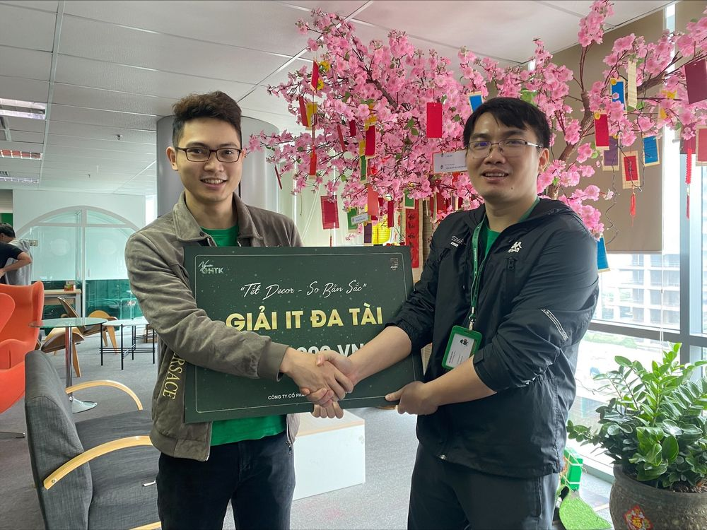
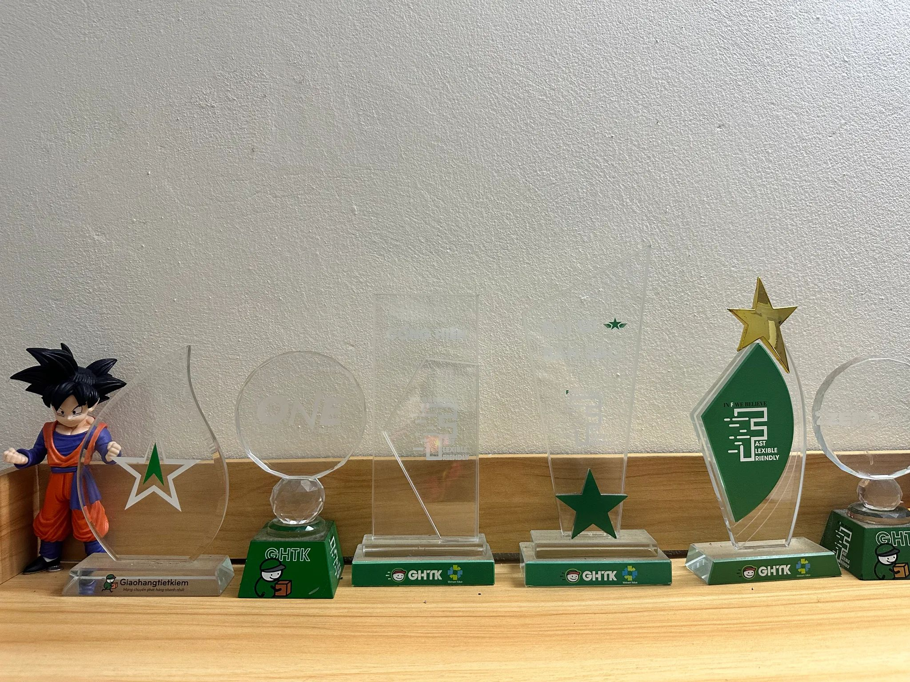
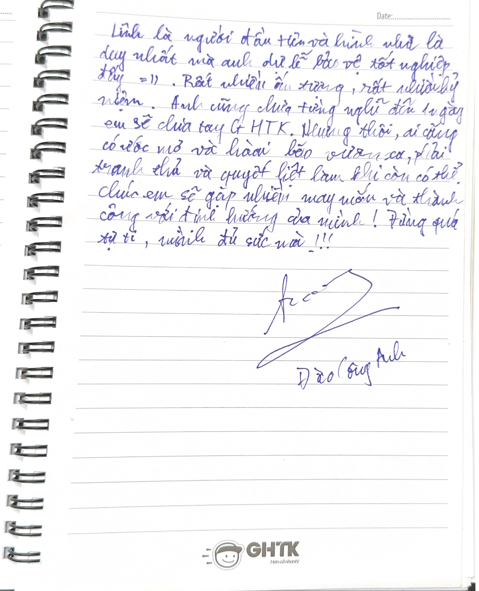
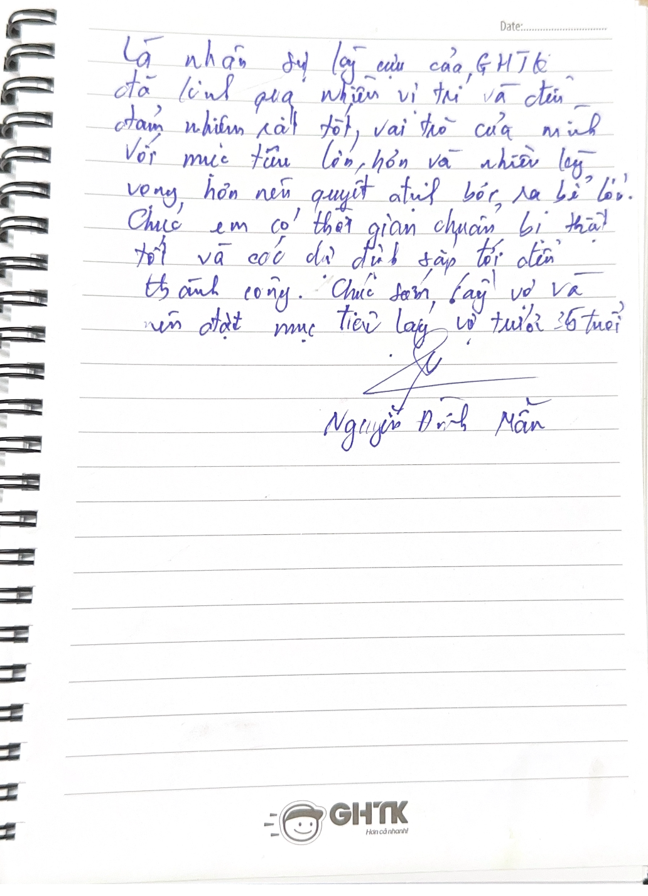
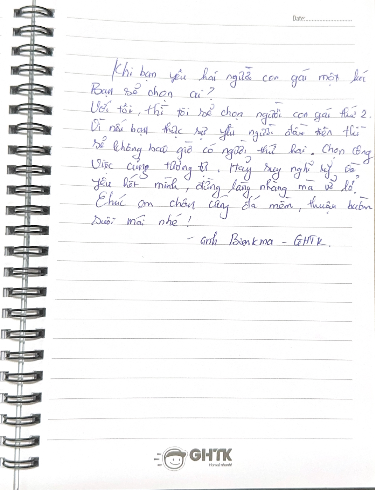
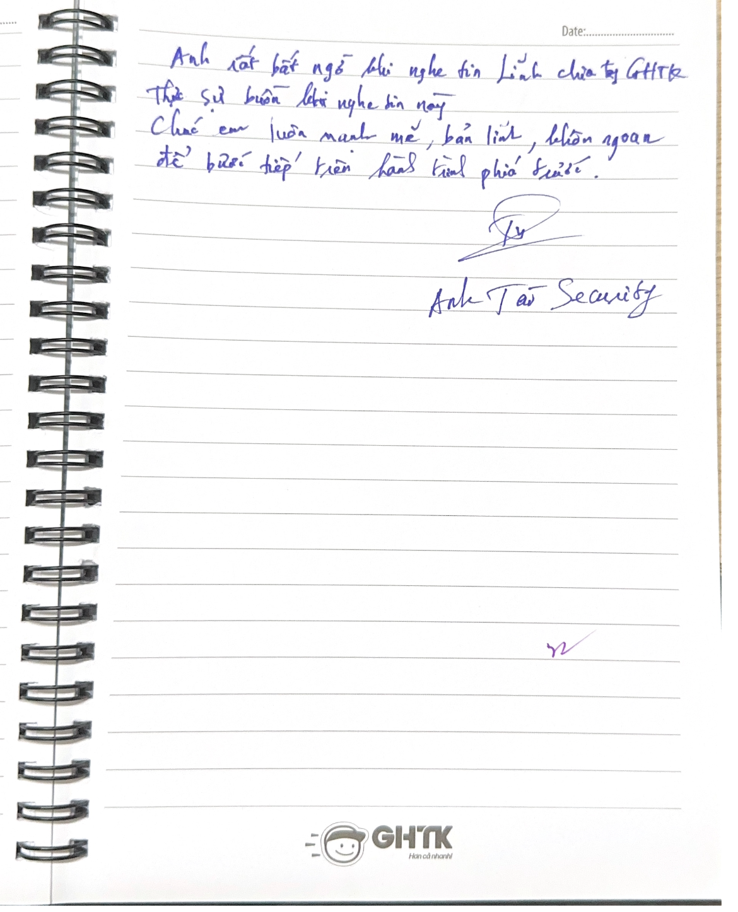

I'm Link, a Senior Software Engineer with 8+ years of experience
building large-scale, high-performance systems.
My current primary focus is backend engineering, the financial systems,
and performance optimization. I am looking for opportunities in global
companies where I can contribute to challenging technical problems,
growing as a Global Software Engineer!
Core backend engineer responsible for building the product from scratch.
Built and scaled a trading platform serving total 120K+ users, 300M+ requests/month, and 3 TB of off-chain data with near real-time synchronization (<2 seconds behind on-chain events).
Optimized system performance to maintain zero slow database queries (<1s) and zero slow background jobs (<10s).
Designed and implemented a Performance Monitor System providing real-time insights and proactive alerts (slow queries, access logs, error logs) for all GHTK systems — 1000+ physical servers, 100+ databases, 700M requests/day.
Key member of the DBA team: database optimization and review of all actions performed across GHTK databases (20+ TB data, 4000+ tables).
Conducted stress tests, periodically evaluated performance per project, and proposed optimization strategies. Reduced lag of the main MySQL database (20 TB) at peak from 30 minutes to under 10 seconds.
Researched and trained new high-performance technologies. Became a backend internal trainer for 200+ IT engineers(lessons still used for training until today).
Technical Leader — WMS System
Sep 2019 – Dec 2022
Team size: 5+ members
Warehouse Management Systems: controlled sorting devices in GHTK warehouses (WCS, PLC, Crossbelt, Wheel sorters, sensors), sorting 100K packages/day/warehouse — 3× faster than the old sorting system.
APIs with response time <100ms, 30M requests/day, ~350 msg/s (Kafka), peak CCU 3000 users, near real-time statistical data.
Researched and developed AI and Big Data solutions.
Parse-address system: parse addresses from text, Excel files, API, etc.
Identity-identification system: recognize and validate ID-card information of newly registered shops.
🎓 Education
Ha Noi University of Science and Technology
Aug 2014 – Dec 2018
Major: Computer Science
Graduation classification: Very Good
🎬 Training
Here are some videos & slides I made for training at GHTK. Due to GHTK's
policy, I can only share an internal private link with those who genuinely want to learn!
MySQL IndexingMySQL Query OptimizationReplication & Scaling
During my 8 years working at both Minswap & GHTK,
I always received the highest performance-review score at the end of the year — only
less than 10% of employees receive an "Excellent" rating. I always
strive to complete my assigned tasks well and have received many different awards.
Beyond technical awards, I also actively join company social activities. Here are some
of the awards I received:
2025 · Minswap — Best Performance Award
2024
I had just joined Minswap (only 2 months — probation period), so there is no performance-review result for this year.
2024 · Performance review2023 · Performance Result (GHTK)2022 · Performance Result (GHTK)2022 · Best Leader of the Year2022 · Identity Ambassador (Đại sứ bản sắc)

2021 · Developer with Multi-talented2020 · Promise Leader of the Year

2018–2020 · Other awards
😍 Reviews from my colleagues

Mr. Đào Công Anh — Chief Technology Officer (GHTK)

Mr. Nguyễn Đình Mẫn — Head of Department, Data Solution Architect · Top Expert (GHTK)Mr. Phạm Minh Sơn — Head of Department, Gmap · Top Expert (GHTK)Mr. Lê Ngọc Thường — Head of Department, Merchant Services (GHTK)

Mr. Trịnh Đình Biên — Head of Department, Infrastructure · Top Expert (GHTK)

Mr. Bùi Đức Tài — Head of Department, Security · Top Expert (GHTK)
🔀 References
If you want to verify my information, please contact my references below.
Mr. Ma Trong Khoi — Chief Technology Officer (GHTK JSC). fb.com/khoimt